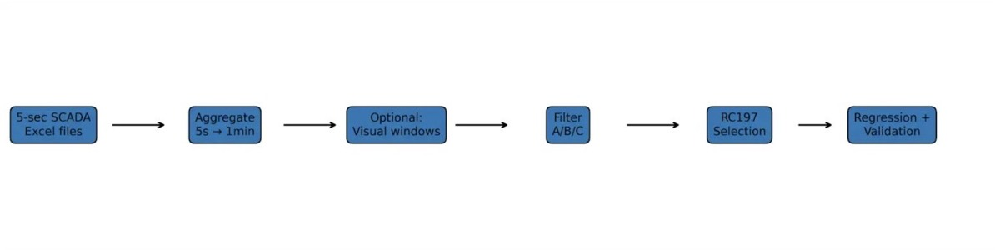

01 / Context
One plant, two questions that both come down to trusting the data.
Capacity testing decides whether a plant is delivering what it promised, and module temperature drives how much it can deliver at all. Both questions are answered from the same high-frequency SCADA record, and both are usually answered by hand.
The study treated them as one problem in two parts: make the capacity-test selection reproducible instead of judgment-by-eye, and improve the temperature model without throwing away the physics that makes it interpretable.
02 / Capacity regression
A defensible ASTM E2848 dataset, selected by a pipeline rather than by eye.
Reviewing thousands of high-frequency records by hand is slow, hard to reproduce, and sensitive to inconsistent judgment. Selection was reframed as an auditable pipeline that preserves the physical basis of the test, automates the repetitive checks, and exposes enough diagnostics for an engineer to challenge the result.
- Ingested and aggregated five-second SCADA exports into a consistent analysis interval.
- Applied physical operating-window filters before any statistical screening.
- Added rolling-stability logic and Isolation Forest anomaly detection to drop unstable or atypical periods.
- Produced the retained dataset, regression outputs, residual checks, and figures as one repeatable analysis package.
Automatic selection closely reproduced the manual review: 780 automatically retained observations against 788 selected by hand, from 11,520 candidate records.

03 / Temperature prediction
Keep the physical estimate; learn only the error it leaves behind.
Module temperature responds to irradiance, ambient conditions, wind, time history, and plant-specific effects. A physical baseline captures the first-order relationship but leaves recurring, structured error. Rather than replace it, the model learns that residual.
- Estimate. Calculate a physically based module-temperature prediction from weather and operating variables.
- Measure the gap. Subtract the baseline from the observed module temperature.
- Learn the residual. Fit histogram gradient boosting to the remaining systematic error.
- Recombine. Add the predicted residual back onto the physical estimate.
- Hold out days. Test on complete unseen days to keep time-series leakage out of the result.
Across the saved 3,077-observation test set the residual model reached 1.96 °C MAE, 2.55 °C RMSE, and R² of 0.921 — roughly 52% lower MAE and 51% lower RMSE than the archived physical baseline.
04 / My role
Data pipeline, filtering, modelling, and validation.
I developed the Python filtering and validation workflow for the capacity analysis, and built the end-to-end temperature modelling work: data preparation, physically meaningful and time-aware features, the residual formulation, the leave-one-day-out evaluation, and the published figures and diagnostics. The paper is co-authored; the sections above describe my own contribution to it.
05 / Outcome
A result that can be rerun, inspected, and argued with.
The strongest outcome is not a smaller dataset or a lower error figure. It is a documented route from raw records to a published result that another engineer can rerun, inspect, and revise — with the physical reasoning still visible inside the model rather than buried under it.